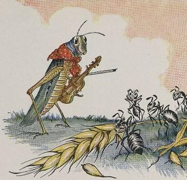
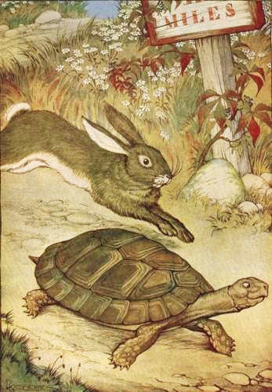

B2 · Stories & Literature
Slow and Steady
Two fables of Aesop about time — one about spending it, one about wasting it at exactly the wrong moment.
Play the audio and follow along, then read it again on your own. Tap or hover over a highlighted word to see what it means.
Two fables about time. The first is the one people quote at children, and it is harder than it looks. The second is the most famous story in the collection, and almost everybody misremembers what it is about.
The Grasshopper and the Ant
One bright day in late autumn a family of ants were busy in the warm sunshine, drying out the grain they had stored up during the summer, when a starving grasshopper, his fiddle under his arm, came up and humbly begged for something to eat.
“What!” cried the ants in surprise. “Haven't you stored anything away for the winter? What in the world were you doing all last summer?”
“I didn't have time to store up any food,” whined the grasshopper. “I was so busy making music that before I knew it the summer was gone.”
The ants shrugged in disgust. “Making music, were you?” they cried. “Very well — now dance!” And they turned their backs on him and went on with their work.
There is a time for work and a time for play.

The Tortoise and the Hare
A hare was making fun of a tortoise one day for being so slow. “Do you ever actually get anywhere?” he asked, with a mocking laugh.
“Yes,” replied the tortoise, “and I get there sooner than you think. I'll race you and prove it.”
The hare was much amused at the idea of racing a tortoise, but agreed for the fun of it. A fox, who had consented to act as judge, marked out the distance and started them off.
The hare was soon out of sight. To make the tortoise feel how ridiculous it was to race a hare, he lay down beside the course to take a nap until the tortoise should catch up.
The tortoise meanwhile kept going, slowly and steadily, and after a time passed the place where the hare was sleeping. The hare slept peacefully on. When at last he woke, the tortoise was near the finish. The hare ran his fastest, and could not catch him in time.
Slow and steady wins the race.

The grasshopper fable is usually told as though the answer is obvious, and it is worth noticing how unpleasant the ants are. They are not wrong. They are also smug, and they have enough to share and do not. The fable has been rewritten many times for exactly this reason — in some versions the ants relent, in others the grasshopper dies — and which ending a culture prefers says a good deal about it. Note too what the grasshopper was doing. He was not asleep. He was making music, which nobody in the story values and which the reader, holding a book, presumably does.
The second fable is misremembered almost universally. It is not about a slow animal beating a fast one through effort; the tortoise does nothing clever and never goes faster. It is about the hare, who loses because of what he believes about his opponent. He stops not from tiredness but from contempt — he lies down specifically to make a point — and the moral English took from it, slow and steady wins the race, quietly credits the winner rather than blaming the loser. The Greek moral was closer to the truth: the race is lost by the one who thinks it is already won.
Key Vocabulary
- grain the seeds of cereal plants, stored as food
- to store up to put food or supplies aside for later use
- starving suffering severely from hunger
- fiddle a violin, in informal or folk use
- to beg to ask for something urgently and without dignity
- to whine to complain in a weak, high voice
- to shrug to raise the shoulders to show you do not care
- to turn one's back on to refuse to help somebody any further
- to make fun of to laugh at somebody unkindly
- actually in fact, really — careful: not 'at the moment'
- mocking showing that you find somebody ridiculous
- to mark out to set the limits of something on the ground
- course the route a race follows
- to catch up to reach somebody who is ahead of you
- smug too pleased with your own correctness
- to relent to stop refusing and finally agree
- contempt the feeling that somebody is beneath your attention
Slow and Steady — B2 · Stories & Literature · Renan the Teacher, English Language Academy · https://renangrossi.github.io/englishclasses/reading/b2/aesop-slow-and-steady.html
Interactive Exercises
Practice
Complete each exercise, then click Submit to see your score and an explanation for every answer.
Speaking & Writing
Discussion
There are no right answers here — use these to practice speaking, or write a short answer to each.
- The ants are correct and unpleasant at once. Does being right excuse how they behave?
- The grasshopper was making music. Does that change the fable for you — and should it?
- “The race is lost by the one who thinks it is already won.” Have you seen that happen?
- Why do you think English took the moral that praises the tortoise rather than one that blames the hare?
- Choose one of these two fables and rewrite the ending in about 150 words so that it teaches the opposite lesson. What did you have to change?